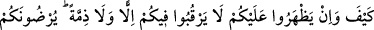
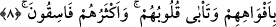

yâni Damre ve Kinâneoğulları’nın “dışında” verdikleri sözden dönen ve antlaşmayı
bozan “müşriklerin Allah ve Rasûlü yanında nasıl” hukukuna riâyeti ve müddeti tamam
olana kadar muhâfazayı hak eden, sâyesinde ölümden ve yakalanmaktan kurtulacakları
“bir ahdi olabilir?” Yâni onların yerine getirilmesi gerekli olan bir ahidlerinin olması
imkansızdır.
Ayetteki “nasıl?” anlamına gelen soru istifham-ı inkârî olarak kullanılmıştır. “Allah’ı
nasıl inkar edersiniz?” (el-Bakara, 2/28) âyetinde olduğu gibi olanı inkar anlamına
değil, olmasını inkar anlamınadır.
Antlaşma yapılanların hepsinin aynı olmadığını beyan etmek için Mescid-i Haram
yakınında (Hudeybiye’de) kendileriyle antlaşma yapılanlar müstesnâ tutulmuştur.
Mescid-i Haram’ın zikredilmesi, antlaşma sahiplerini daha belirgin hale getirmek ve
onun vurgulanmasının sebebini hissettirmek içindir.
“Onlar size dürüst davrandıkları müddetçe siz de onlara dürüst davranın.” Ahde
sadakat konusunda size karşı dürüst davrandıkları müddetçe siz de onlara verdiğiniz
antlaşma süresine sadakat göstererek onlara dürüst davranın. Çünkü onlar başkaları gibi
antlaşmalarını bozmamışlardır.
Bu cümlenin şu mânâda olması da muhtemeldir: “Ahidlerine sadakat gösterdikleri
zaman siz de ahde vefa gösterin.”
Üçüncü anlam ise şöyledir: “Her ne zaman size karşı dürüst olurlarsa siz de onlara
karşı dürüst olun.”
“Çünkü Allah” ahdi bozmaktan sakınan “takvâ sahiplerini sever.” Bu cümle, dürüst
davranma emrinin illetini beyan etmekte ve ahdi muhâfaza etmenin takvânın
gereklerinden olduğunu îmâ etmektedir.
Bir hadiste şöyle buyurulmuştur: “Kıyamet günü ahdi bozan her kişi için onun ahdini
ne kadar bozduğunu gösteren bir sancak dikilir.”[94]
Şihâb Şerhi’nde der ki: Hadisteki “Sancak”tan murad, teşhirdir. Sözünde
durmayanlar, kıyamet günü vefâsızlıkları kadar rezil ve rüsvay olacaklardır.
Mevlâna Mesnevî’de der ki:
Sakın vefasızlara gitme
İyi dinle! Onlar viran olmuş bir köprü gibidir
Ahdi mîsakı bozmak, ahmahlıktandır
İman ve vefayı muhafaza etmekse muttakînin işidir
8. Nasıl olabilir ki! Onlar size galip gelseler, sizin hakkınızda ne ahit, ne de
antlaşma gözetirlerdi. Onlar ağızlarıyla sizi râzı ediyorlar, halbuki kalpleri (buna)